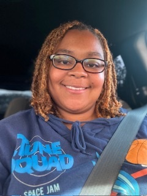

LaTeisha Fisher

Summary
I am a very organized individual who manages time wisely and looking for an opportunity to showcase my skill set.
Education
Bachelor of Science, Sport Management-High Point University (2007-2011)
Work Experience
i9 Sports Site Manager
August 2022-Present
Organize teams and inventory
Delegate job duties to employees
Wake County Public Schools Transportation
January 2014-Present
Pre-trip/Post-trip of vehicle every morning and afternoon
Pick up and drop off students safely and on-time
Document student counts and any incidents that occur
Skills
Customer Service
Organizational skills
Time management
Awards and Certifications
4-year basketball Scholarship
Other
My Hobbies
Contact Me